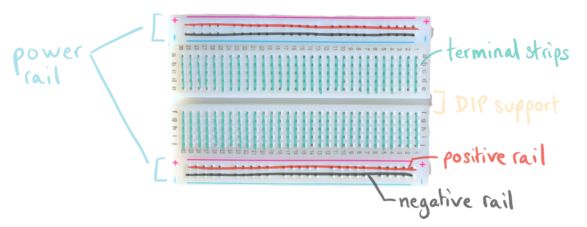
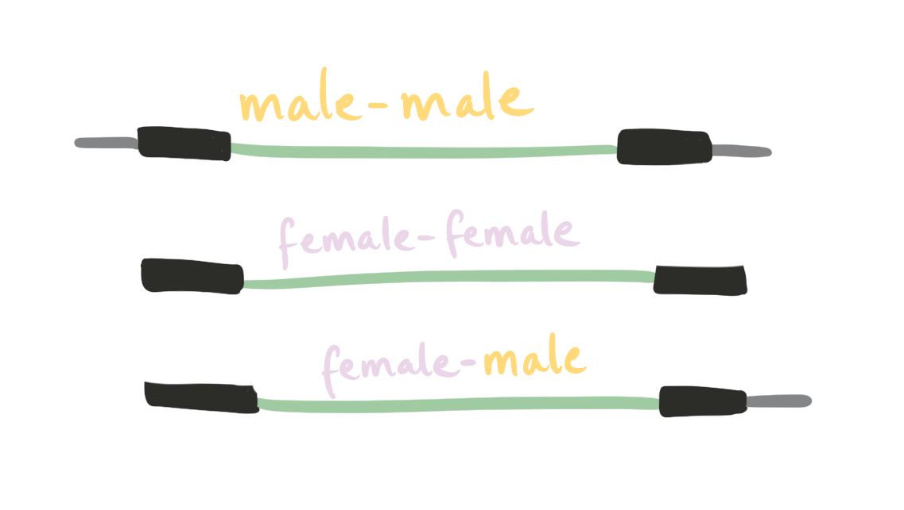
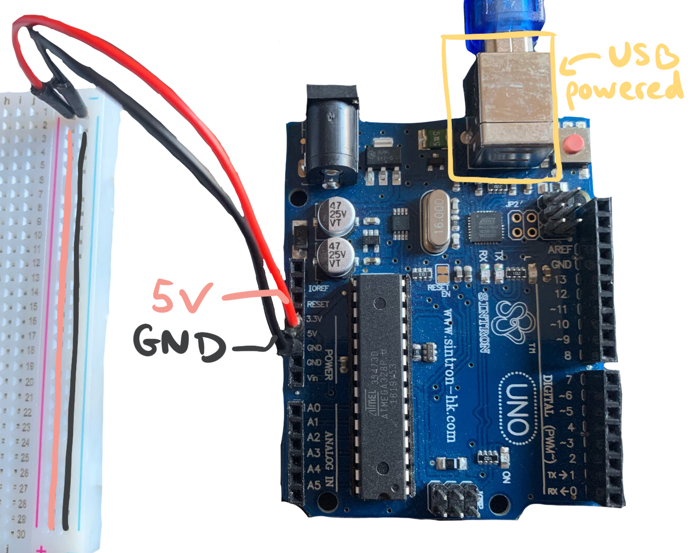
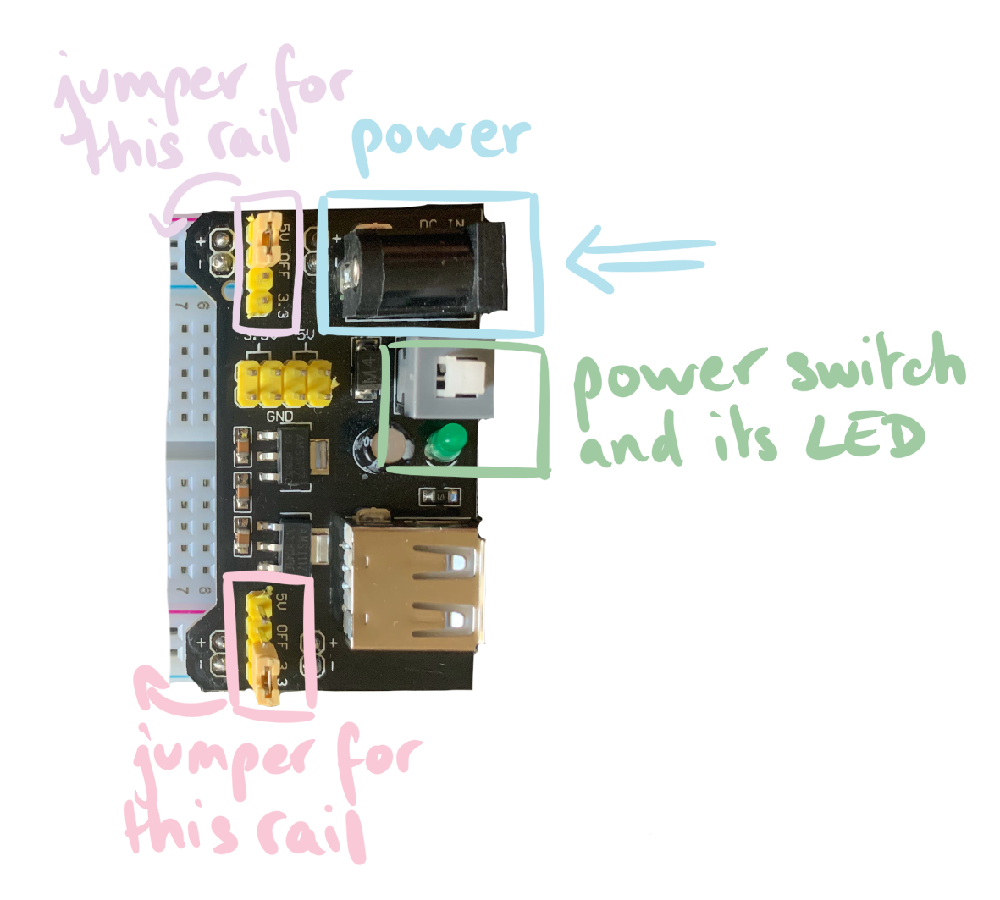
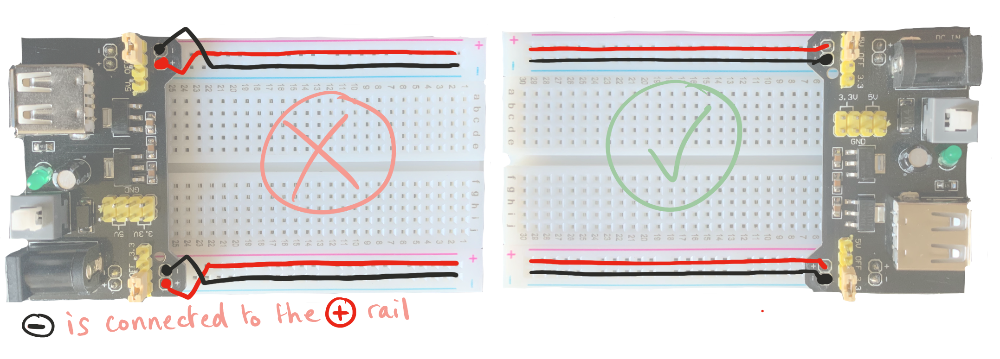
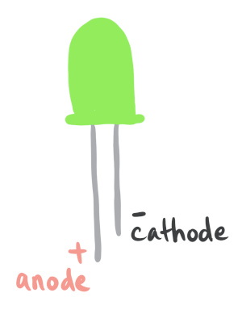
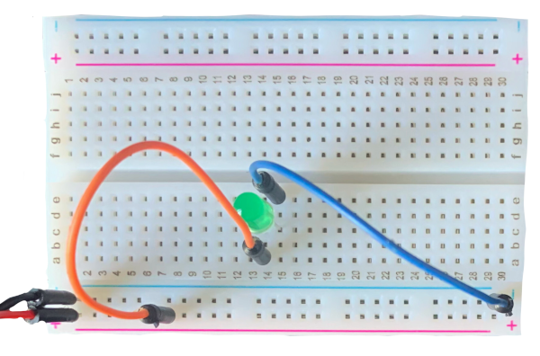
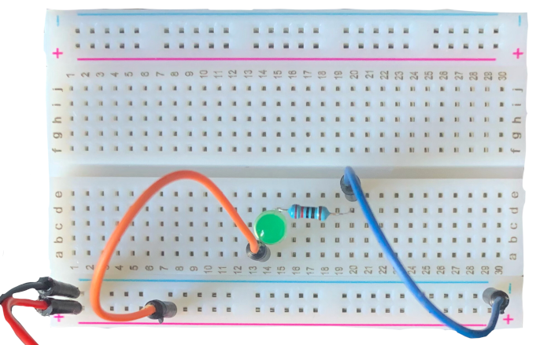
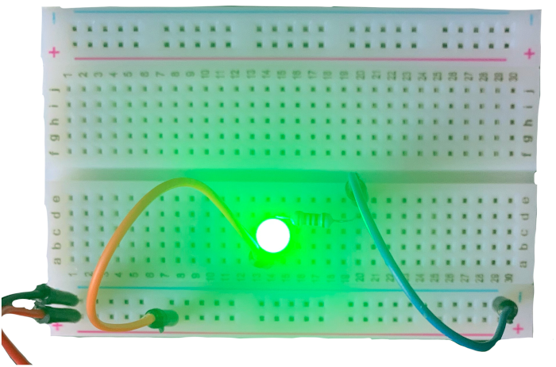

My First Circuit
Welcome to electronics 101: My First Circuit. I had to write this post because I have brain glitches and sometimes forget how a breadboard works…
When you learn to code, the first thing you learn is how to output the string Hello World!. Allow me to introduce the electronics equivalent of the hello world: a circuit which lights up a LED.
For this circuit, you’ll need:
- a breadboard
- a power source
- a LED
- a resistor
- jumper wires
I recommend getting a “electronics starter kit”, they should all have these basic components.
Breadboard 101
The breadboard is the thing full of tiny holes in which we will put all our components to create a circuit without having to solder anything.

- Power rail: composed of two horizontal lines of metal
- the red line for the
+ - the blue (or black) line for
- - note: the top and bottom power rails are not connected, you’ll need to connect them with jumper wires if you want the same power source on both sides.
- the red line for the
- Terminal strips: Pins of a vertical row are connected
- DIP support: used to plug integrated circuit with a DIP package. Legs of the chip are on each side of the ravine and prevent them from being connected.
If you’re interested by the anatomy of a breadboard, check out “how breadboard works” on Engineers Garage.
To connect components on the breadboard, we use jumper wires. Jumper wires are named from their end points:
- If the end has a pin and can be plugged into something, it’s a male end.
- If the end has a slot and things are plugged into it, it’s a female end.
This gives us 3 types of jumper wires:

To connect 2 points on the breadboard, you’ll need a M/M jumper.
Powering up the breadboard
There are many ways to supply power to the breadboard! I’ll present two of them that I can actually show, check out Seven Ways To Supply Power To Your Breadboard for more ideas.
With A Microcontroller
If you have a microcontroller, like an Arduino, you can connect the power and ground pins of the Arduino to the breadboard:

The Arduino itself can be powered from a USB cable either plugged to a computer or a battery pack.
With A Power Supply Module
These tiny modules can be plugged directly in the breadboard! Here’s is the “MB102 breadboard power supply” module:

It can output 3.3V or 5V, and you can choose the value for the top power rail and the bottom power rail. It also has a power on/off switch with a LED indicating the state.
The power supply board gets its power from a barrel jack power supply. What’s going on with the USB port: honestly, I have no idea. Some sources say you can also power it from the USB, but I’m not entirely sure what’s going on with the USB female socket. If it was an input USB, I would expect a micro USB rather than a USB female. Anyway, I don’t have male-male USB cable to test, so I just don’t use the USB on that board.
/!\ Avoid mixing up the + and - of the module with those of the power rail when you plug it in, this will reduce the risk of having reverse polarity in your circuit.

Building The Circuit

A LED has 2 pins:
- a long pin (anode) as the positive part
- a short pin (cathode) as the negative part
A LED will only light up if current is applied in the right direction: from positive to negative. Putting a LED backwards will not damage it, so if your LED doesn’t light up, try flipping it up.
Your first instinct might be to build something like this:

A LED might be fine with a 3V powered circuit, but the LED will be permanently damaged if the circuit is powered with 9V for example. Kirchoff’s voltage law (or KVL) states that in any closed loop of the circuit, the sum of voltages is 0. This means that any current injected in the circuit must be consumed. We need to add an element which will consume the excess current: that’s exactly what resistors are for!
LEDs typically work with 20mA, so a 220 Ohm resistor is fine here. We’ll see later how to calculate and pick a resistor for a given LED.

The circuit works as follows:
- A red wire goes from the Arduino 5V pin to the positive power rail
- An orange wire connects the positive power tail to the positive pin of the LED (the anode)
- The negative pin of the LED (the cathode) is connected to one end of the resistor
- A blue wire connects the other end of the resistor to the negative power rail
- The negative power rail is connected to the GND pin of the Arduino
And when you actually apply power (the Arduino wasn’t powered up before):

Huzzah, the LED lights up! Impressive, I know, I know.
Links
That’s it for tonight gentlefolks, stay awesome.